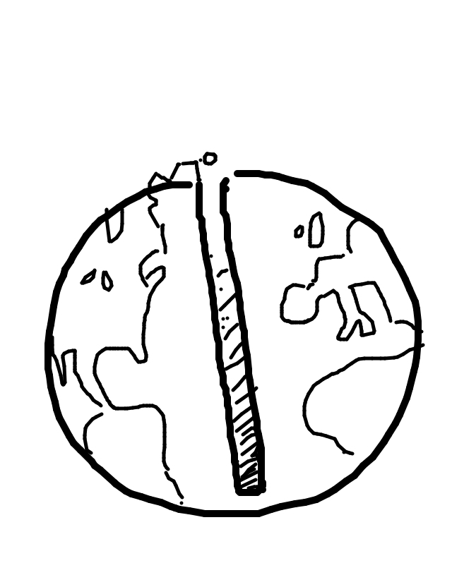
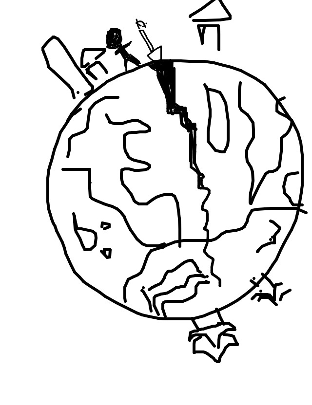
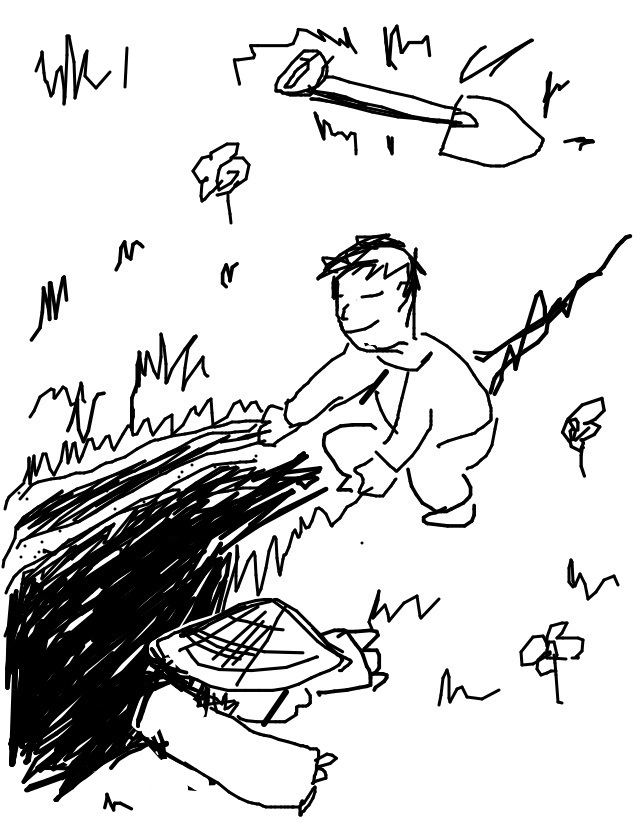

so rickyc drew...

so mike wrote...
The void is deep and narrow.
so tag drew...
so jason wrote...
Through his innocent attempt to visit china, Sam Sticky unknowingly severed the earth with his hole
so matt drew...
so irondavy wrote...
Why dig to China when you can separate the plates of Earth themselves?
so jackcheng drew...
so tasia wrote...
"If only I had a shovel," he thought, "oh wait... here's one floating right above me."